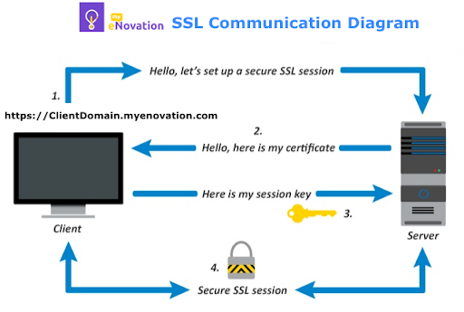
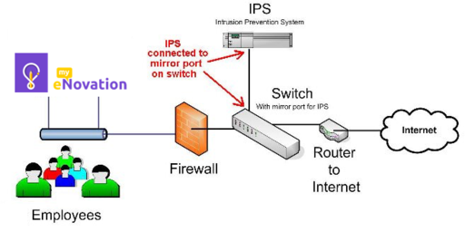
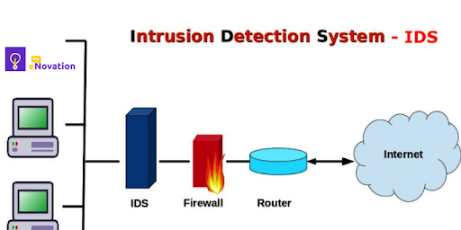
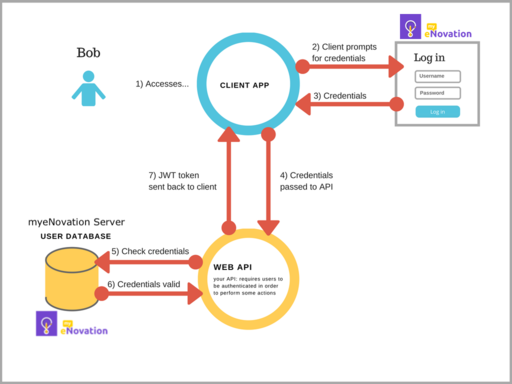

myeNovation - Security Compliance
Our state-of-the-art technology and network infrastructure ensures that our customers enjoy world-class data security and peace of mind !!
Data Transmission
The information shared through web portal or mobile app is always sent over a secure connection using 2048 bit SSL encryption (the same level of encryption used by leading banks). Our SSL Certificate is provided by godaddy.
World’s strongest encryption
Our SSLs use SHA-2 and 2048-bit encryption to protect all sensitive data transmitting from the browser to server. It’s the strongest encryption which is virtually uncrackable.
Storage and Backups
Data Security
Network Security
Server Security
Application Security
Security Officer
As a part of security compliance to GDPR, we have appointed one of our employee as Security Officer for managing, investigating, maintaining and handling security related issues.
Data Transmission
The information shared through web portal or mobile app is always sent over a secure connection using 2048 bit SSL encryption (the same level of encryption used by leading banks). Our SSL Certificate is provided by godaddy.
World’s strongest encryption
Our SSLs use SHA-2 and 2048-bit encryption to protect all sensitive data transmitting from the browser to server. It’s the strongest encryption which is virtually uncrackable.

Storage and Backups
- All of our customer data is stored using a redundant database server cluster, and securely managed storage.
- This includes real-time backups as well as nightly scheduled backups.
- As a result of all these, our customers enjoy 24x7x365 reliability. We have consistently delivered 99.9% uptime since our inception, so you can count on us.
Data Security
- Restricted access to production servers and databases.
- No access to real customer data to any of our employees.
- Strong one-way encryption for storing passwords and other sensitive data.
- Permanent removal of user data from all databases in case user access been removed.
Network Security
- Our network perimeter is protected by state-of-the-art firewalls and monitored by intrusion detection & prevention system (IDS / IPS).
- We proactively analyse firewall and IDS logs to detect and prevent security threats.
-
IPS - An Intrusion Prevention System (IPS) is a network security/threat prevention technology that examines network traffic flows to detect and prevent vulnerability exploits.
 -
An intrusion detection system - IDS - is a device or software application that monitors a network or systems for malicious activity or policy violations which is explained below diagram.

Server Security
- Network address translation, port redirection, and other proprietary techniques being used to safeguard servers.
- Single secure access point(SSL) for production server.
- All servers are protected with strong passwords and restricted user access.
- We maintain all operating systems at each vendor’s recommended patch levels for security and further harden them using proprietary techniques.
- All production servers are hosted on Cloud with Linux Operating System, which is one of the secured OS.
Application Security
- Login authentication to access the product features.
- User session management to restrict unauthorised user access.
- End-to-end SSL (Secure Socket Layer) encryption to encrypt all data during transmission.
- Application level User Access Management to control user access to product features.
- JWT Token authentication for session security. A JSON Web Token (JWT) is a web standard that defines a method for transferring claims as a JSON object in such a way that they can be cryptographically signed or encrypted. It is used extensively in the internet today.

Security Officer
As a part of security compliance to GDPR, we have appointed one of our employee as Security Officer for managing, investigating, maintaining and handling security related issues.